Aplicación 3.10 (Información muestral - Multicolinealidad): Análisis de la rentabilidad empresarial
En este ejercicio se intentará explicar la rentabilidad anual (RENTAB) obtenida por 80 empresas, utilizando para ello diferente información contable interna en forma de ratios económico-financieros (R1, R2,…, R10), así como datos sobre el volumen de ventas totales (VT) y el tamaño de las empresas, medido este último por el valor total de los activos (AT).
Código R
# Lectura de librerías
library(tidyverse)
library(car)
library(corrplot)
library(broom)
library(cowplot)
library(mctest)
# Lectura de datos
RENTAB_EMP <- read_delim("data/RENTAB_EMP.csv", ";",
escape_double = FALSE, trim_ws = TRUE)
summary(RENTAB_EMP) RENTAB AT VT R1
Min. :-0.5000 Min. : 30.27 Min. : 1.00 Min. :0.0000
1st Qu.: 0.0875 1st Qu.: 55.56 1st Qu.: 62.80 1st Qu.:0.1500
Median : 0.1400 Median : 75.57 Median : 83.52 Median :0.2400
Mean : 0.1450 Mean :100.51 Mean :117.43 Mean :0.3048
3rd Qu.: 0.2100 3rd Qu.:101.02 3rd Qu.:125.21 3rd Qu.:0.3950
Max. : 0.5700 Max. :518.01 Max. :539.15 Max. :1.7800
R2 R3 R4 R5
Min. :0.000 Min. :-1.2800 Min. : 0.290 Min. : 0.1400
1st Qu.:1.135 1st Qu.: 0.0900 1st Qu.: 1.135 1st Qu.: 0.5775
Median :1.535 Median : 0.1600 Median : 1.375 Median : 0.7550
Mean :1.668 Mean : 0.1817 Mean : 1.615 Mean : 1.0049
3rd Qu.:2.040 3rd Qu.: 0.2500 3rd Qu.: 1.715 3rd Qu.: 0.9775
Max. :5.440 Max. : 1.4700 Max. :12.980 Max. :12.9800
R6 R7 R8 R9
Min. :0.0000 Min. :0.0000 Min. :0.0000 Min. :0.0000
1st Qu.:0.2100 1st Qu.:0.1700 1st Qu.:0.3200 1st Qu.:0.1575
Median :0.2800 Median :0.2750 Median :0.4750 Median :0.3950
Mean :0.3242 Mean :0.2624 Mean :0.4946 Mean :0.5109
3rd Qu.:0.4200 3rd Qu.:0.3600 3rd Qu.:0.6225 3rd Qu.:0.6000
Max. :0.9400 Max. :0.7400 Max. :1.1600 Max. :4.2100
R10
Min. :-1.28
1st Qu.: 0.10
Median : 0.20
Mean : 0.21
3rd Qu.: 0.33
Max. : 1.47 # Regresión MCO para explicar las variaciones en la rentabilidad de las empresas
lm_1 <- lm(RENTAB ~ log(VT) + R1 + R2 + R3 + R4 + R5 + R6 + R7 + R8 + R9 + R10,
data=RENTAB_EMP)
S(lm_1)Call: lm(formula = RENTAB ~ log(VT) + R1 + R2 + R3 + R4 + R5 + R6 + R7 + R8 +
R9 + R10, data = RENTAB_EMP)
Coefficients:
Estimate Std. Error t value Pr(>|t|)
(Intercept) 0.10571 0.07189 1.470 0.14606
log(VT) 0.03038 0.01435 2.118 0.03785 *
R1 0.04870 0.05438 0.895 0.37368
R2 0.01309 0.01086 1.206 0.23205
R3 0.44367 0.16199 2.739 0.00786 **
R4 -0.05617 0.05032 -1.116 0.26818
R5 -0.01200 0.05376 -0.223 0.82402
R6 -0.26587 0.09783 -2.718 0.00833 **
R7 -0.01899 0.12382 -0.153 0.87855
R8 -0.08293 0.06315 -1.313 0.19351
R9 -0.01248 0.01215 -1.027 0.30818
R10 0.12626 0.12275 1.029 0.30730
---
Signif. codes: 0 '***' 0.001 '**' 0.01 '*' 0.05 '.' 0.1 ' ' 1
Residual standard deviation: 0.07114 on 68 degrees of freedom
Multiple R-squared: 0.7634
F-statistic: 19.95 on 11 and 68 DF, p-value: < 2.2e-16
AIC BIC
-182.86 -151.90 # Detección de la multicolinealidad
# Análisis global
mctest::omcdiag(lm_1)
Call:
mctest::omcdiag(mod = lm_1)
Overall Multicollinearity Diagnostics
MC Results detection
Determinant |X'X|: 0.0000 1
Farrar Chi-Square: 868.1514 1
Red Indicator: 0.3669 0
Sum of Lambda Inverse: 254.5917 1
Theil's Method: 0.3297 0
Condition Number: 53.2324 1
1 --> COLLINEARITY is detected by the test
0 --> COLLINEARITY is not detected by the test# Matríz de correlaciones de las variables explicativas (sin incluir la constante)
attach(RENTAB_EMP)
X <- data.frame(log(VT), R1, R2, R3, R4, R5, R6, R7, R8, R9, R10)
cor(X) log.VT. R1 R2 R3 R4 R5
log.VT. 1.00000000 0.04455432 0.37937815 -0.26986714 -0.5403307 -0.58688804
R1 0.04455432 1.00000000 0.13959301 -0.71176219 -0.2434206 -0.23104458
R2 0.37937815 0.13959301 1.00000000 -0.28660226 -0.2767741 -0.30332163
R3 -0.26986714 -0.71176219 -0.28660226 1.00000000 0.6020270 0.62075909
R4 -0.54033073 -0.24342056 -0.27677409 0.60202699 1.0000000 0.97447873
R5 -0.58688804 -0.23104458 -0.30332163 0.62075909 0.9744787 1.00000000
R6 0.16832365 -0.02100811 -0.16872501 0.12042353 -0.2363989 -0.16929931
R7 0.17615205 0.13428960 0.33451829 -0.29984891 -0.1207788 -0.30299567
R8 0.15785850 0.01106237 -0.09166777 0.09333641 -0.2430305 -0.19754376
R9 0.02387962 -0.16507346 0.04319976 -0.05465976 -0.0545034 -0.07882045
R10 -0.17346991 -0.67446971 -0.28226733 0.96910077 0.5496828 0.56385554
R6 R7 R8 R9 R10
log.VT. 0.16832365 0.17615205 0.157858498 0.023879622 -0.1734699
R1 -0.02100811 0.13428960 0.011062374 -0.165073458 -0.6744697
R2 -0.16872501 0.33451829 -0.091667765 0.043199761 -0.2822673
R3 0.12042353 -0.29984891 0.093336407 -0.054659764 0.9691008
R4 -0.23639892 -0.12077879 -0.243030466 -0.054503402 0.5496828
R5 -0.16929931 -0.30299567 -0.197543764 -0.078820446 0.5638555
R6 1.00000000 -0.41733008 0.865538114 -0.003837950 0.1375172
R7 -0.41733008 1.00000000 -0.291781677 0.093247877 -0.3058542
R8 0.86553811 -0.29178168 1.000000000 0.002774409 0.1110367
R9 -0.00383795 0.09324788 0.002774409 1.000000000 -0.0399822
R10 0.13751716 -0.30585425 0.111036662 -0.039982201 1.0000000# Mapa de calor asociado
corrplot(cor(X))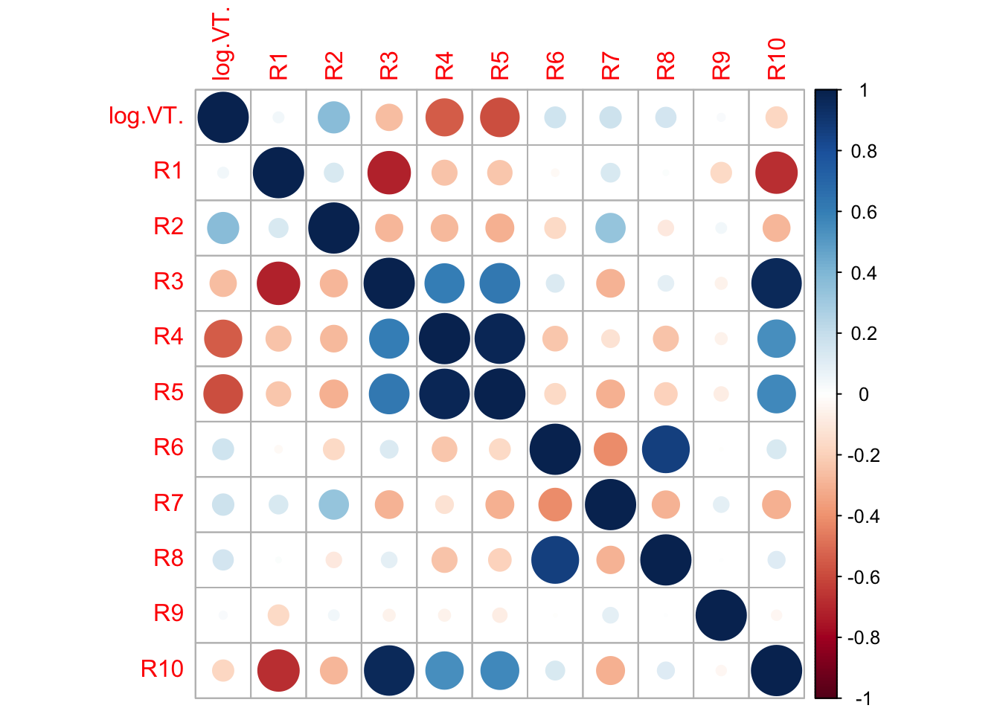
# Factores de inflación de la varianza (VIF)
vif(lm_1) log(VT) R1 R2 R3 R4 R5 R6 R7
2.207711 3.182916 1.512578 30.241277 82.054917 97.964824 4.848121 5.376679
R8 R9 R10
4.231952 1.139049 21.831647 vif(lm_1) > 10 # multicolinealidad alta: se coresponde con un VIF>10, es decir, Rj^2>0.90log(VT) R1 R2 R3 R4 R5 R6 R7 R8 R9
FALSE FALSE FALSE TRUE TRUE TRUE FALSE FALSE FALSE FALSE
R10
TRUE sqrt(vif(lm_1)) log(VT) R1 R2 R3 R4 R5 R6 R7
1.485837 1.784073 1.229869 5.499207 9.058417 9.897718 2.201845 2.318767
R8 R9 R10
2.057171 1.067262 4.672435 sqrt(vif(lm_1)) > 2 # cota alternativa: se coresponde con un VIF>4, es decir, Rj^2>0.75log(VT) R1 R2 R3 R4 R5 R6 R7 R8 R9
FALSE FALSE FALSE TRUE TRUE TRUE TRUE TRUE TRUE FALSE
R10
TRUE mctest::imcdiag(lm_1, method = "VIF", vif=10)
Call:
mctest::imcdiag(mod = lm_1, method = "VIF", vif = 10)
VIF Multicollinearity Diagnostics
VIF detection
log(VT) 2.2077 0
R1 3.1829 0
R2 1.5126 0
R3 30.2413 1
R4 82.0549 1
R5 97.9648 1
R6 4.8481 0
R7 5.3767 0
R8 4.2320 0
R9 1.1390 0
R10 21.8316 1
Multicollinearity may be due to R3 R4 R5 R10 regressors
1 --> COLLINEARITY is detected by the test
0 --> COLLINEARITY is not detected by the test
===================================mctest::imcdiag(lm_1, method = "VIF", vif=4)
Call:
mctest::imcdiag(mod = lm_1, method = "VIF", vif = 4)
VIF Multicollinearity Diagnostics
VIF detection
log(VT) 2.2077 0
R1 3.1829 0
R2 1.5126 0
R3 30.2413 1
R4 82.0549 1
R5 97.9648 1
R6 4.8481 1
R7 5.3767 1
R8 4.2320 1
R9 1.1390 0
R10 21.8316 1
Multicollinearity may be due to R3 R4 R5 R6 R7 R8 R10 regressors
1 --> COLLINEARITY is detected by the test
0 --> COLLINEARITY is not detected by the test
===================================# Corrección del problema de la multicolinealidad
# Método de componentes principales (PCA)
# Estándar de R
PCA_X <- prcomp(X, scale. = TRUE)
summary(PCA_X)Importance of components:
PC1 PC2 PC3 PC4 PC5 PC6 PC7
Standard deviation 1.9979 1.5319 1.2094 1.00242 0.86701 0.78755 0.67507
Proportion of Variance 0.3629 0.2134 0.1330 0.09135 0.06834 0.05638 0.04143
Cumulative Proportion 0.3629 0.5762 0.7092 0.80054 0.86888 0.92527 0.96669
PC8 PC9 PC10 PC11
Standard deviation 0.46950 0.34571 0.14512 0.07318
Proportion of Variance 0.02004 0.01086 0.00191 0.00049
Cumulative Proportion 0.98673 0.99760 0.99951 1.00000dim(PCA_X$rotation)[1] 11 11PCA_X$rotation PC1 PC2 PC3 PC4 PC5
log.VT. 0.272060602 0.1982069074 0.4137599 0.27338881 -0.032304569
R1 0.292893420 -0.1054146400 -0.5368550 0.05752372 0.299295872
R2 0.236359706 -0.1167409339 0.3529184 0.27420521 0.681183843
R3 -0.448679443 0.1211005503 0.2645271 0.13400463 0.004135074
R4 -0.414177415 -0.2384492414 -0.1248104 0.01139264 0.352103394
R5 -0.431076419 -0.1854722032 -0.1956456 0.01139931 0.328588874
R6 -0.003530123 0.6054335323 -0.1327187 -0.04116143 0.207472602
R7 0.204139683 -0.3241050981 0.3000028 0.01593913 0.151842982
R8 0.019537592 0.5803512575 -0.1050323 -0.03170302 0.323402183
R9 0.028624268 0.0009420534 0.2983959 -0.89643584 0.206023991
R10 -0.427505522 0.1471314431 0.2907247 0.14830202 -0.016321539
PC6 PC7 PC8 PC9 PC10
log.VT. 0.17716306 0.756295804 0.15358288 -0.069431887 0.0828318547
R1 -0.02188778 0.336050204 -0.62819485 0.049231609 0.0994317039
R2 0.34049854 -0.380180298 -0.03598096 0.057757622 -0.0305511302
R3 -0.07878078 -0.048317314 -0.33385219 0.052457420 0.7459489740
R4 -0.08306651 0.291671522 0.30090099 -0.010916327 -0.1388159574
R5 0.09672745 0.208752961 0.22940019 -0.017212079 0.0894993785
R6 -0.13436411 0.007200247 0.16414896 0.724294420 -0.0366804587
R7 -0.83747856 0.044284228 0.02093318 0.122181942 0.0058947245
R8 -0.29746686 -0.082064324 0.06607274 -0.668168262 0.0006368832
R9 0.13845613 0.152737278 -0.14365962 0.002383958 0.0308049128
R10 -0.05149352 0.086539317 -0.52295219 0.016339284 -0.6294993375
PC11
log.VT. 0.032788772
R1 -0.040656254
R2 -0.026721787
R3 -0.129933035
R4 -0.655753035
R5 0.720784665
R6 0.009277156
R7 0.145732844
R8 0.012204574
R9 -0.002250226
R10 0.093030098dim(PCA_X$x)[1] 80 11# plot(PCA_X)
# Estilo tidyverse
PCA_X %>% tidy(matrix = "eigenvalues")# A tibble: 11 × 4
PC std.dev percent cumulative
<dbl> <dbl> <dbl> <dbl>
1 1 2.00 0.363 0.363
2 2 1.53 0.213 0.576
3 3 1.21 0.133 0.709
4 4 1.00 0.0914 0.801
5 5 0.867 0.0683 0.869
6 6 0.788 0.0564 0.925
7 7 0.675 0.0414 0.967
8 8 0.470 0.0200 0.987
9 9 0.346 0.0109 0.998
10 10 0.145 0.00191 1.00
11 11 0.0732 0.00049 1 PCA_X %>% tidy(matrix = "rotation")# A tibble: 121 × 3
column PC value
<chr> <dbl> <dbl>
1 log.VT. 1 0.272
2 log.VT. 2 0.198
3 log.VT. 3 0.414
4 log.VT. 4 0.273
5 log.VT. 5 -0.0323
6 log.VT. 6 0.177
7 log.VT. 7 0.756
8 log.VT. 8 0.154
9 log.VT. 9 -0.0694
10 log.VT. 10 0.0828
# ℹ 111 more rowsPCA_X %>%
tidy(matrix = "eigenvalues") %>%
ggplot(aes(PC, percent)) +
geom_col(fill = "#56B4E9", alpha = 0.8) +
scale_x_continuous(breaks = 1:11) +
scale_y_continuous(labels = scales::percent_format(), expand = expansion(mult = c(0, 0.01))) +
theme_minimal_hgrid(12)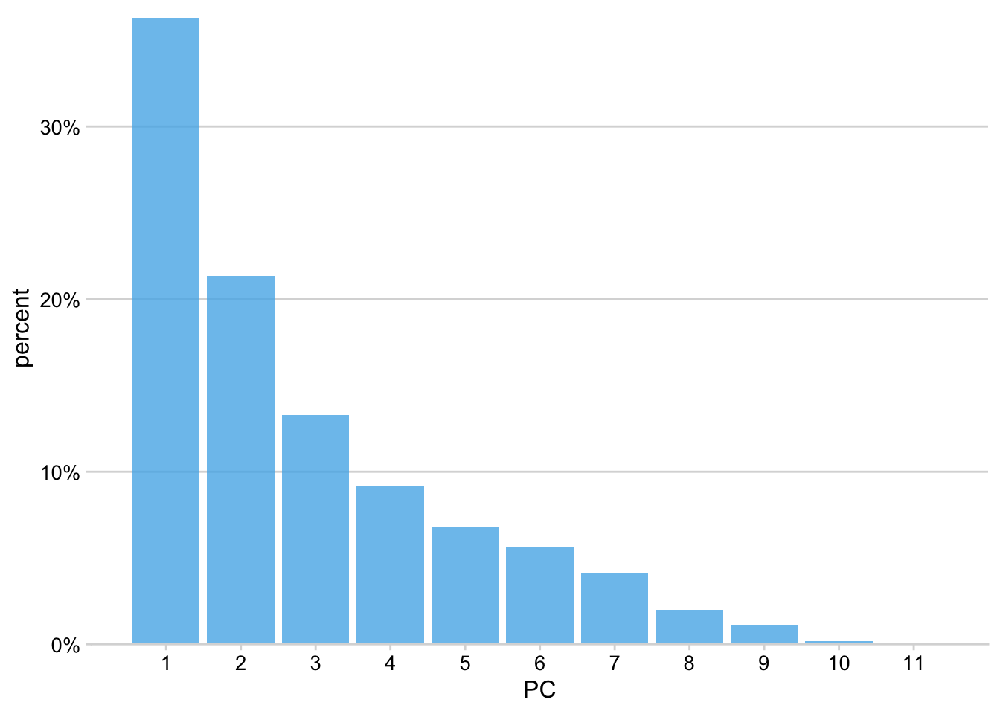
PCA_X %>%
augment(RENTAB_EMP) %>%
ggplot(aes(.fittedPC1, .fittedPC2)) + geom_point(size = 1.5) +
theme_half_open(12) + background_grid()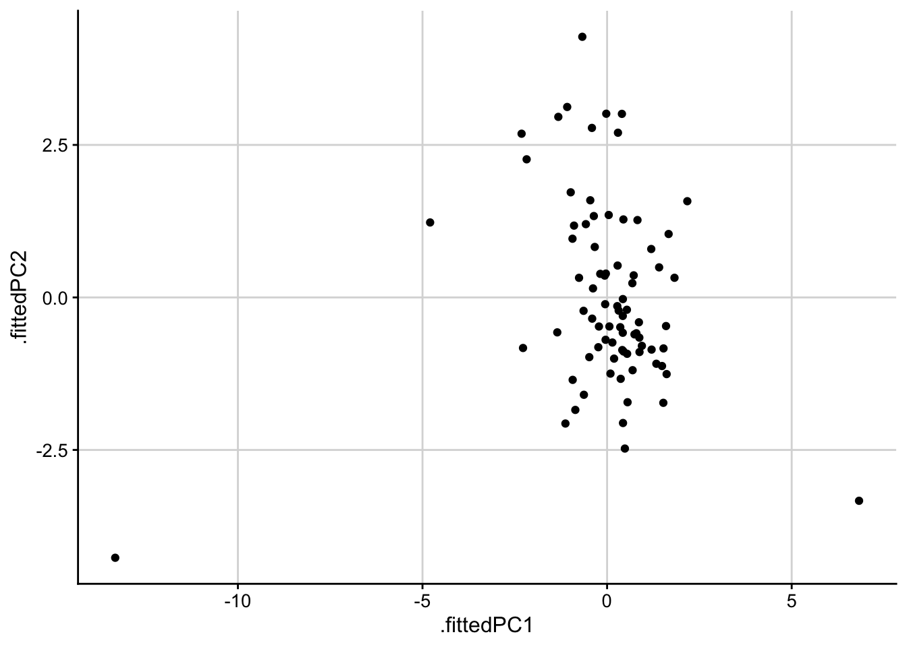
arrow_style <- arrow(angle = 20, ends = "first", type = "closed", length = grid::unit(8, "pt"))
PCA_X %>%
tidy(matrix = "rotation") %>%
pivot_wider(names_from = "PC", names_prefix = "PC", values_from = "value") %>%
ggplot(aes(PC1, PC2)) +
geom_segment(xend = 0, yend = 0, arrow = arrow_style) +
geom_text(aes(label = column),hjust = 1, nudge_x = -0.02, color = "#904C2F") +
xlim(-1.25, .5) + ylim(-.5, 1) +
coord_fixed() +
theme_minimal_grid(12)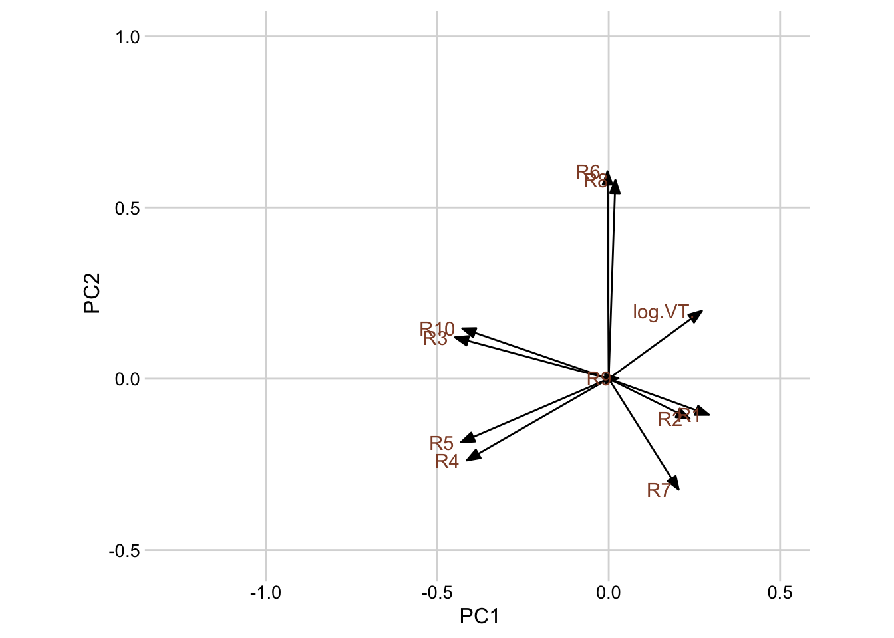
# Significado de la variables explicativas (factores)
round(PCA_X$rotation[,1],2)log.VT. R1 R2 R3 R4 R5 R6 R7 R8 R9
0.27 0.29 0.24 -0.45 -0.41 -0.43 0.00 0.20 0.02 0.03
R10
-0.43 round(PCA_X$rotation[,2],2)log.VT. R1 R2 R3 R4 R5 R6 R7 R8 R9
0.20 -0.11 -0.12 0.12 -0.24 -0.19 0.61 -0.32 0.58 0.00
R10
0.15 round(PCA_X$rotation[,3],2)log.VT. R1 R2 R3 R4 R5 R6 R7 R8 R9
0.41 -0.54 0.35 0.26 -0.12 -0.20 -0.13 0.30 -0.11 0.30
R10
0.29 round(PCA_X$rotation[,4],2)log.VT. R1 R2 R3 R4 R5 R6 R7 R8 R9
0.27 0.06 0.27 0.13 0.01 0.01 -0.04 0.02 -0.03 -0.90
R10
0.15 # Regresión con los cuatros primeros factores (explicatividad > 80%)
lm_2 <- lm(RENTAB ~ PCA_X$x[,1:4])
S(lm_2)Call: lm(formula = RENTAB ~ PCA_X$x[, 1:4])
Coefficients:
Estimate Std. Error t value Pr(>|t|)
(Intercept) 0.145000 0.010487 13.827 < 2e-16 ***
PCA_X$x[, 1:4]PC1 -0.017070 0.005282 -3.232 0.001829 **
PCA_X$x[, 1:4]PC2 0.004465 0.006888 0.648 0.518813
PCA_X$x[, 1:4]PC3 0.069539 0.008725 7.970 1.36e-11 ***
PCA_X$x[, 1:4]PC4 0.042087 0.010527 3.998 0.000148 ***
---
Signif. codes: 0 '***' 0.001 '**' 0.01 '*' 0.05 '.' 0.1 ' ' 1
Residual standard deviation: 0.09379 on 75 degrees of freedom
Multiple R-squared: 0.5465
F-statistic: 22.59 on 4 and 75 DF, p-value: 2.853e-12
AIC BIC
-144.8 -130.5 # Método de mínimos cuadrados parciales (PLS)
library(pls)
lm_3 <- plsr(RENTAB ~ log(VT) + R1 + R2 + R3 + R4 + R5 + R6 + R7 + R8 + R9 + R10, data=RENTAB_EMP, ncomp=11, validation="CV")
summary(lm_3)Data: X dimension: 80 11
Y dimension: 80 1
Fit method: kernelpls
Number of components considered: 11
VALIDATION: RMSEP
Cross-validated using 10 random segments.
(Intercept) 1 comps 2 comps 3 comps 4 comps 5 comps 6 comps
CV 0.1366 0.1307 0.1332 0.09562 0.08442 0.08419 0.08374
adjCV 0.1366 0.1319 0.1321 0.09578 0.08434 0.08381 0.08323
7 comps 8 comps 9 comps 10 comps 11 comps
CV 0.07970 0.07788 0.07901 0.08063 0.07998
adjCV 0.07901 0.07728 0.07826 0.07974 0.07915
TRAINING: % variance explained
1 comps 2 comps 3 comps 4 comps 5 comps 6 comps 7 comps 8 comps
X 51.18 76.48 83.97 89.74 93.94 98.39 99.18 99.83
RENTAB 15.42 42.25 60.72 68.54 71.15 72.83 75.04 75.55
9 comps 10 comps 11 comps
X 99.92 99.95 100.00
RENTAB 76.10 76.34 76.34explvar(lm_3) Comp 1 Comp 2 Comp 3 Comp 4 Comp 5 Comp 6
51.17860789 25.30497881 7.48641359 5.77426812 4.19405115 4.45405962
Comp 7 Comp 8 Comp 9 Comp 10 Comp 11
0.78918833 0.64755300 0.08611158 0.03076461 0.05400330 plsCV <- RMSEP(lm_3, estimate="CV")
plot(plsCV,main="")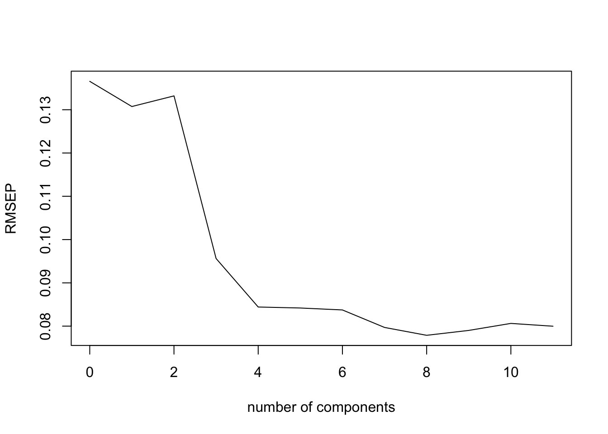
#
plot(lm_3, ncomp = 3, asp = 1, line = TRUE)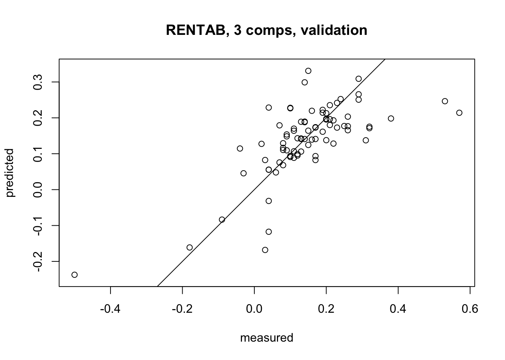
plot(lm_3, plottype = "scores", comps = 1:3)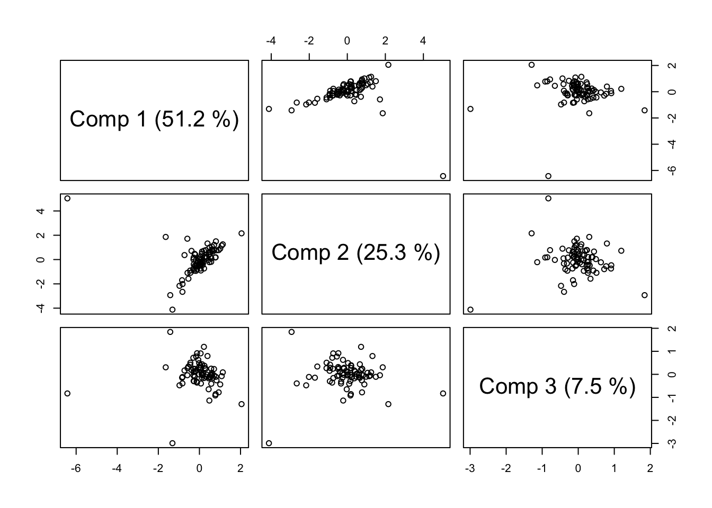
plot(lm_3, plottype = "correlation")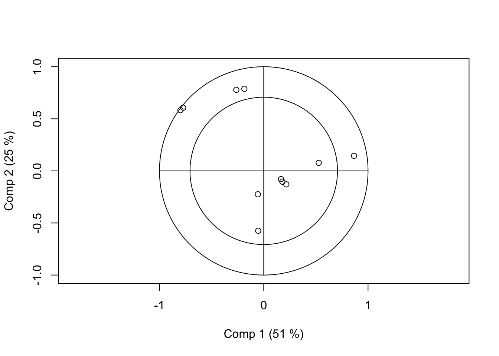
plot(lm_3, plottype = "coef", comps = 1:3, legendpos = "bottomright")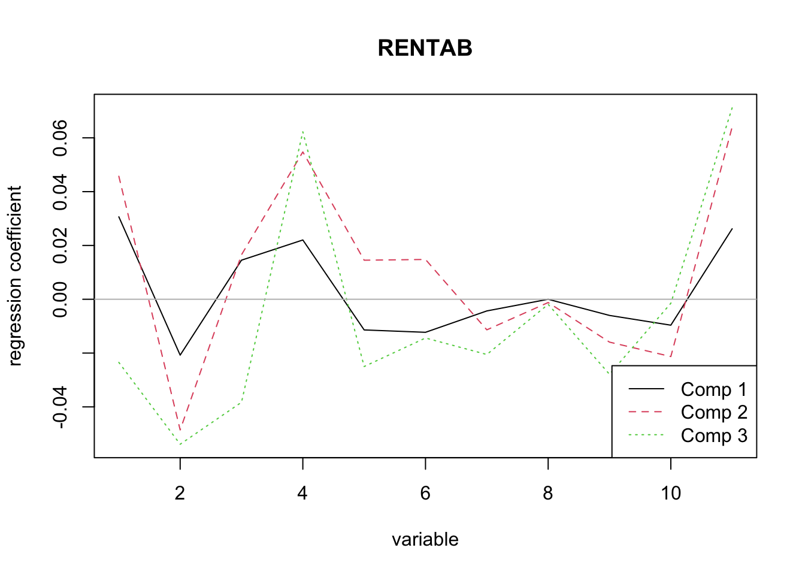
# Método Ridge
# Librería MASS
library(MASS)
lm_4_1 <- lm.ridge(RENTAB ~ log(VT) + R1 + R2 + R3 + R4 + R5 + R6 + R7 + R8 + R9 + R10, data=RENTAB_EMP) # lambda por defecto
lm_4_1 log(VT) R1 R2 R3 R4
0.10571279 0.03038112 0.04869529 0.01309305 0.44366809 -0.05617409
R5 R6 R7 R8 R9 R10
-0.01200199 -0.26587009 -0.01899122 -0.08292600 -0.01247702 0.12626126 lm_4_2 <- lm.ridge(RENTAB ~ log(VT) + R1 + R2 + R3 + R4 + R5 + R6 + R7 + R8 + R9 + R10, data=RENTAB_EMP, lambda = 0.05)
lm_4_2 log(VT) R1 R2 R3 R4
0.10688010 0.03007276 0.04770882 0.01324266 0.43832445 -0.05458838
R5 R6 R7 R8 R9 R10
-0.01347270 -0.26493944 -0.02167037 -0.08309377 -0.01259580 0.12961973 # Librería glmnet
library(glmnet)
# Variables dependiente e independientes del modelo
data <- data.frame(cbind(log(RENTAB_EMP$VT),RENTAB_EMP$R1,RENTAB_EMP$R2,RENTAB_EMP$R3,
RENTAB_EMP$R4, RENTAB_EMP$R5, RENTAB_EMP$R6, RENTAB_EMP$R7,
RENTAB_EMP$R8,RENTAB_EMP$R9,RENTAB_EMP$R10, RENTAB_EMP$RENTAB))
names(data)=c("l_VT","R1","R2","R3","R4","R5","R6","R7","R8","R9","R10","RENTAB")
x_vars <- data.matrix(data[, 1:11])
y_var <- data[, "RENTAB"]
# Ajuste del modelo estimado
fit_ridge <- glmnet(x_vars,y_var,alpha=0)
plot(fit_ridge, label=TRUE)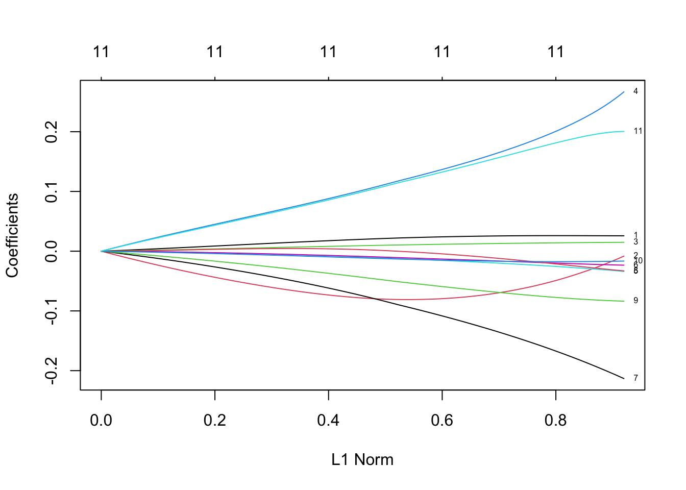
plot(fit_ridge, label=TRUE, xvar="lambda")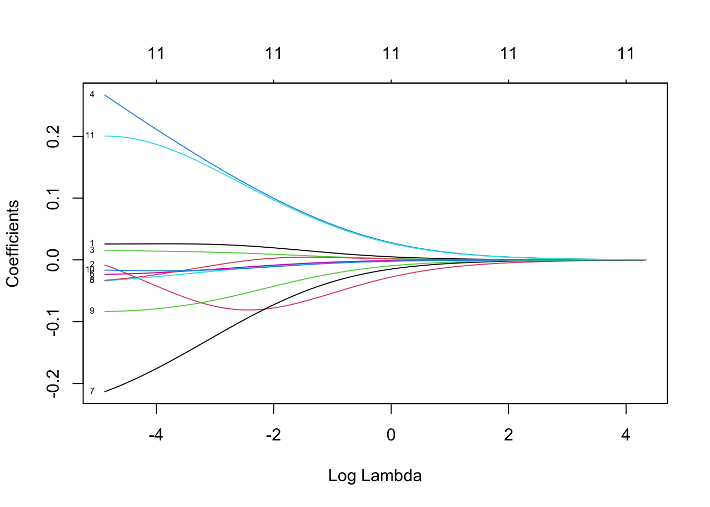
plot(fit_ridge, label=TRUE, xvar="dev")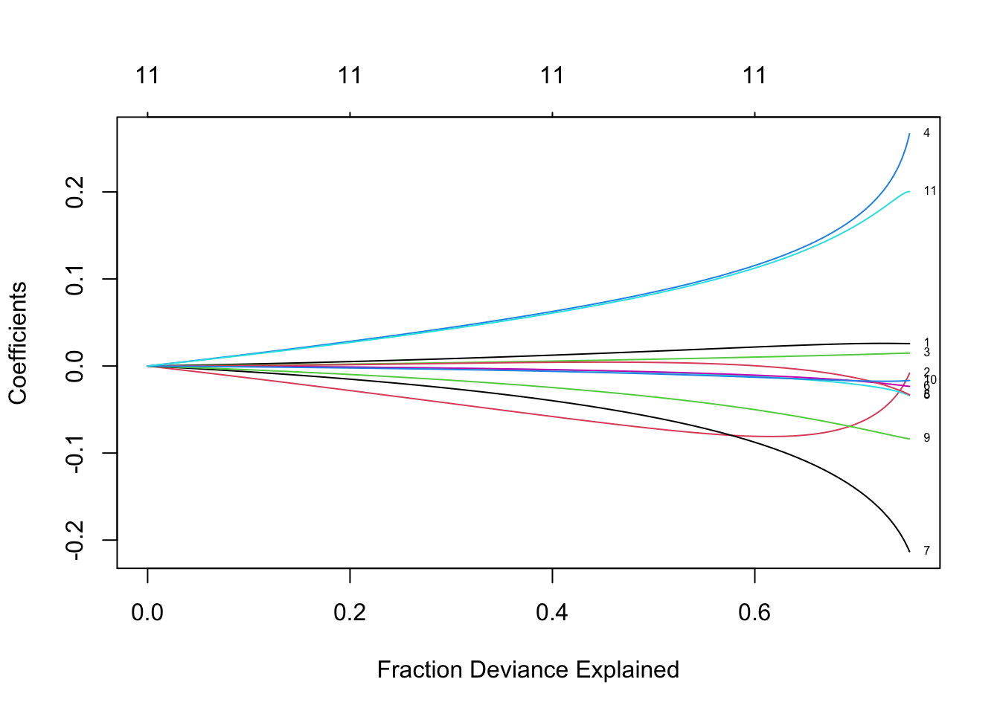
# print(fit_ridge)
coef(fit_ridge,s=0.05) # Parámetros estimados para un lambda s=X concreto12 x 1 sparse Matrix of class "dgCMatrix"
s1
(Intercept) 0.102977226
l_VT 0.025000806
R1 -0.075172389
R2 0.012333111
R3 0.151997456
R4 -0.017950737
R5 -0.015006687
R6 -0.123045293
R7 -0.008468321
R8 -0.064861131
R9 -0.016092669
R10 0.145855543# Selección del lambda óptimo (criterio CV)
cvfit_ridge = cv.glmnet(x_vars, y_var, alpha=0)
plot(cvfit_ridge)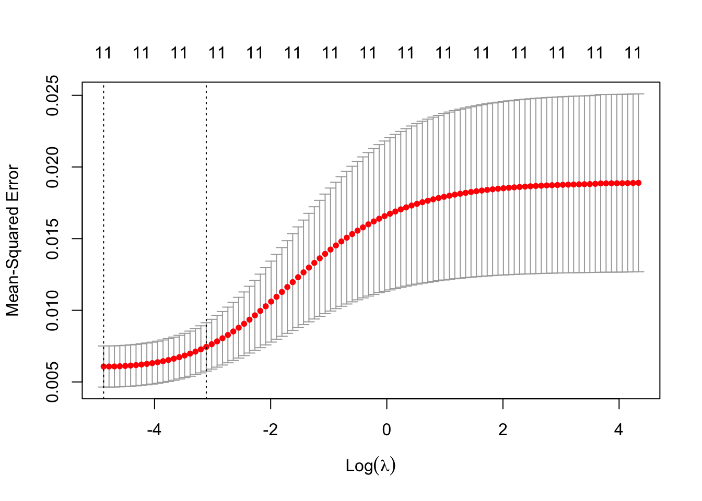
cvfit_ridge$lambda.min[1] 0.007624277coef(cvfit_ridge, s = "lambda.min")12 x 1 sparse Matrix of class "dgCMatrix"
s1
(Intercept) 0.121951806
l_VT 0.025781421
R1 -0.008253952
R2 0.014837128
R3 0.266768030
R4 -0.033884567
R5 -0.023383628
R6 -0.213247120
R7 -0.033015845
R8 -0.083680623
R9 -0.016531917
R10 0.200411207# Método LASSO
# Librería lars
library(lars)
lm_5 <- lars(as.matrix(data[,-12]),data$RENTAB)
plot(lm_5)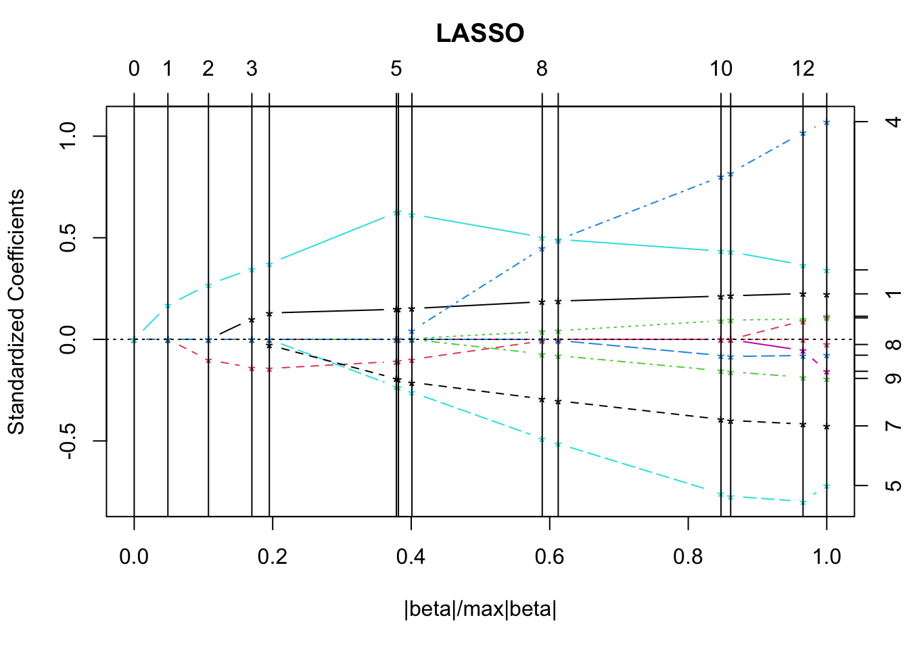
cv_lars_mod <- cv.lars(as.matrix(data[,-12]),data$RENTAB)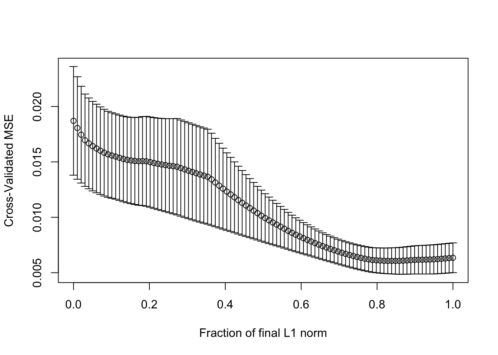
min <- cv_lars_mod$index[which.min(cv_lars_mod$cv)] # El valor min se utiliza en el paso siguiente
predict(lm_5,s=min,type="coef",mode="fraction")$coef # Estimaciones LASSO l_VT R1 R2 R3 R4
2.891714e-02 0.000000e+00 1.141969e-02 3.323789e-01 -5.932980e-02
R5 R6 R7 R8 R9
-1.059601e-05 -2.461453e-01 0.000000e+00 -6.696321e-02 -1.279233e-02
R10
1.601890e-01 # Librería glmnet
# Ajuste del modelo
fit_lasso <- glmnet(x_vars,y_var,alpha=1)
plot(fit_lasso, label=TRUE)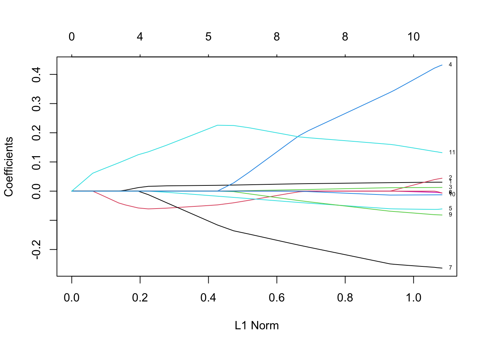
plot(fit_lasso, label=TRUE, xvar="lambda")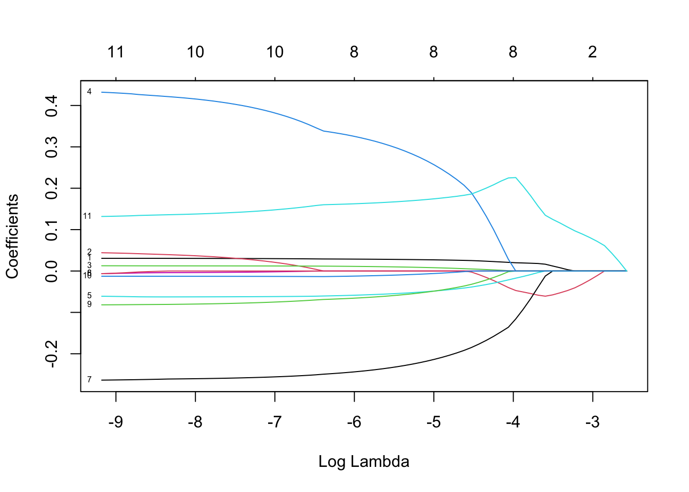
plot(fit_lasso, label=TRUE, xvar="dev")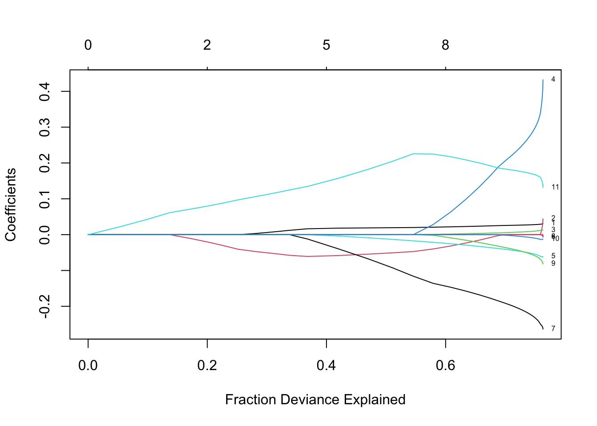
# print(fit_lasso)
coef(fit_lasso,s=0.0006) # Parámetros estimados para un lambda s=X concreto12 x 1 sparse Matrix of class "dgCMatrix"
s1
(Intercept) 0.108891392
l_VT 0.030205635
R1 0.029525284
R2 0.012279829
R3 0.400132893
R4 -0.062166241
R5 -0.002863428
R6 -0.258235110
R7 .
R8 -0.077647231
R9 -0.012925727
R10 0.142347892# Selección del lambda óptimo (criterio CV)
cvfit_lasso = cv.glmnet(x_vars, y_var, alpha=1)
plot(cvfit_lasso)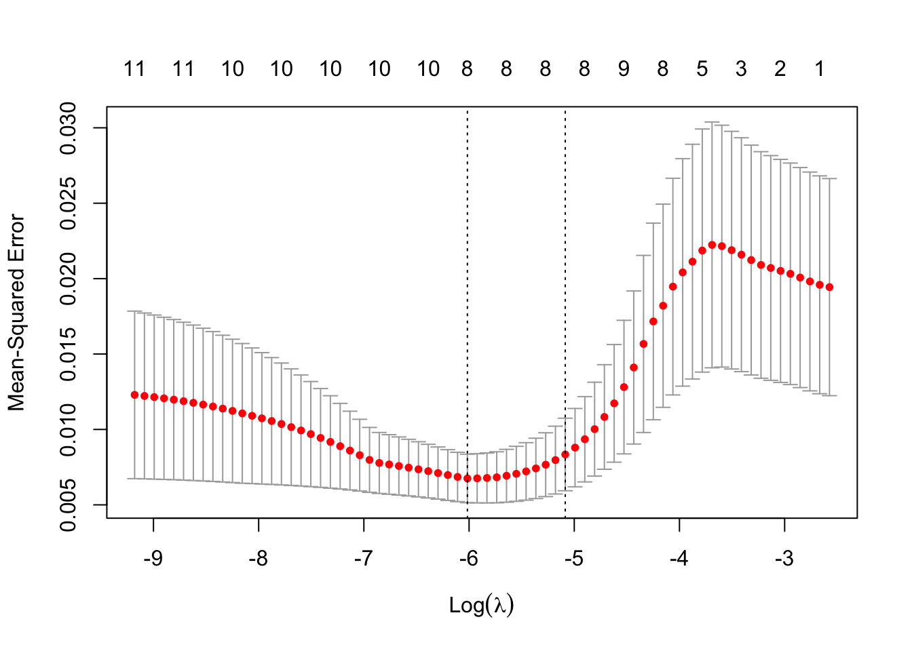
cvfit_lasso$lambda.min[1] 0.00243921coef(cvfit_lasso, s = "lambda.min")12 x 1 sparse Matrix of class "dgCMatrix"
s1
(Intercept) 0.11612149
l_VT 0.02875096
R1 .
R2 0.01120782
R3 0.32599021
R4 -0.05861917
R5 .
R6 -0.24400022
R7 .
R8 -0.06577122
R9 -0.01236173
R10 0.16233954# NOTA FINAL: Hay que estandarizar las variables antes de aplicar
# los modelos lm.ridge y lars (glmnet estandariza las variables
# X e y por defecto para la familia Gaussiana de modelos)
library(caret)
preProcValues <- preProcess(data[,-12], method = c("center", "scale"))
dataTransformed <- predict(preProcValues, data)
x_vars <- data.matrix(dataTransformed[, 1:11])
y_var <- dataTransformed[, "RENTAB"]Código Python
# Lectura de librerías
import pandas as pd
import numpy as np
import matplotlib.pyplot as plt
import seaborn as sns
import statsmodels.api as sm
import statsmodels.formula.api as smf
import statsmodels.stats as smstats
# Lectura de datos
RENTAB_EMP = pd.read_csv("data/RENTAB_EMP.csv", sep=";")
RENTAB_EMP.describe().round(2) RENTAB AT VT R1 R2 ... R6 R7 R8 R9 R10
count 80.00 80.00 80.00 80.00 80.00 ... 80.00 80.00 80.00 80.00 80.00
mean 0.14 100.51 117.43 0.30 1.67 ... 0.32 0.26 0.49 0.51 0.21
std 0.14 84.96 94.19 0.26 0.91 ... 0.18 0.15 0.26 0.70 0.30
min -0.50 30.27 1.00 0.00 0.00 ... 0.00 0.00 0.00 0.00 -1.28
25% 0.09 55.56 62.80 0.15 1.13 ... 0.21 0.17 0.32 0.16 0.10
50% 0.14 75.57 83.52 0.24 1.53 ... 0.28 0.28 0.48 0.39 0.20
75% 0.21 101.02 125.21 0.39 2.04 ... 0.42 0.36 0.62 0.60 0.33
max 0.57 518.01 539.15 1.78 5.44 ... 0.94 0.74 1.16 4.21 1.47
[8 rows x 13 columns]# Regresión MCO para explicar las variaciones en la rentabilidad de las empresas
formula = 'RENTAB ~ np.log(RENTAB_EMP.VT) + R1 + R2 + R3 + R4 + R5 + R6 + R7 + R8 + R9 + R10'
lm_1 = smf.ols(formula, RENTAB_EMP).fit()
print(lm_1.summary()) OLS Regression Results
==============================================================================
Dep. Variable: RENTAB R-squared: 0.763
Model: OLS Adj. R-squared: 0.725
Method: Least Squares F-statistic: 19.95
Date: Wed, 15 Nov 2023 Prob (F-statistic): 3.37e-17
Time: 09:52:35 Log-Likelihood: 104.43
No. Observations: 80 AIC: -184.9
Df Residuals: 68 BIC: -156.3
Df Model: 11
Covariance Type: nonrobust
=========================================================================================
coef std err t P>|t| [0.025 0.975]
-----------------------------------------------------------------------------------------
Intercept 0.1057 0.072 1.470 0.146 -0.038 0.249
np.log(RENTAB_EMP.VT) 0.0304 0.014 2.118 0.038 0.002 0.059
R1 0.0487 0.054 0.895 0.374 -0.060 0.157
R2 0.0131 0.011 1.206 0.232 -0.009 0.035
R3 0.4437 0.162 2.739 0.008 0.120 0.767
R4 -0.0562 0.050 -1.116 0.268 -0.157 0.044
R5 -0.0120 0.054 -0.223 0.824 -0.119 0.095
R6 -0.2659 0.098 -2.718 0.008 -0.461 -0.071
R7 -0.0190 0.124 -0.153 0.879 -0.266 0.228
R8 -0.0829 0.063 -1.313 0.194 -0.209 0.043
R9 -0.0125 0.012 -1.027 0.308 -0.037 0.012
R10 0.1263 0.123 1.029 0.307 -0.119 0.371
==============================================================================
Omnibus: 19.322 Durbin-Watson: 1.961
Prob(Omnibus): 0.000 Jarque-Bera (JB): 60.988
Skew: 0.620 Prob(JB): 5.71e-14
Kurtosis: 7.094 Cond. No. 141.
==============================================================================
Notes:
[1] Standard Errors assume that the covariance matrix of the errors is correctly specified.# Detección de la multicolinealidad
RENTAB_EMP['l_VT'] = np.log(RENTAB_EMP['VT'])
X = RENTAB_EMP.iloc[:,3:]
X.head() R1 R2 R3 R4 R5 ... R7 R8 R9 R10 l_VT
0 4.600000e-01 0.64 0.25 1.53 0.18 ... 0.74 0.12 7.000000e-02 0.25 4.11
1 1.680000e-39 1.79 0.33 1.73 1.26 ... 0.27 0.15 3.000000e-01 0.33 4.25
2 2.400000e-01 0.36 0.20 0.44 0.39 ... 0.01 0.97 5.700000e-01 0.50 4.44
3 4.500000e-01 1.86 0.21 1.23 0.69 ... 0.29 0.52 1.530000e-39 0.23 4.71
4 9.100000e-01 1.26 0.12 1.76 0.90 ... 0.33 0.54 3.100000e-01 0.21 4.85
[5 rows x 11 columns]X = X[['l_VT', 'R1', 'R2', 'R3', 'R4', 'R5', 'R6', 'R7', 'R8', 'R9', 'R10']]
X.head() l_VT R1 R2 R3 R4 ... R6 R7 R8 R9 R10
0 4.11 4.600000e-01 0.64 0.25 1.53 ... 0.10 0.74 0.12 7.000000e-02 0.25
1 4.25 1.680000e-39 1.79 0.33 1.73 ... 0.12 0.27 0.15 3.000000e-01 0.33
2 4.44 2.400000e-01 0.36 0.20 0.44 ... 0.94 0.01 0.97 5.700000e-01 0.50
3 4.71 4.500000e-01 1.86 0.21 1.23 ... 0.29 0.29 0.52 1.530000e-39 0.23
4 4.85 9.100000e-01 1.26 0.12 1.76 ... 0.26 0.33 0.54 3.100000e-01 0.21
[5 rows x 11 columns]# Matriz de correlaciones de las variables explicativas (sin incluir la constante)
X.corr().round(2) l_VT R1 R2 R3 R4 R5 R6 R7 R8 R9 R10
l_VT 1.00 0.04 0.38 -0.27 -0.54 -0.59 0.17 0.18 0.16 0.02 -0.17
R1 0.04 1.00 0.14 -0.71 -0.24 -0.23 -0.02 0.13 0.01 -0.17 -0.67
R2 0.38 0.14 1.00 -0.29 -0.28 -0.30 -0.17 0.33 -0.09 0.04 -0.28
R3 -0.27 -0.71 -0.29 1.00 0.60 0.62 0.12 -0.30 0.09 -0.05 0.97
R4 -0.54 -0.24 -0.28 0.60 1.00 0.97 -0.24 -0.12 -0.24 -0.05 0.55
R5 -0.59 -0.23 -0.30 0.62 0.97 1.00 -0.17 -0.30 -0.20 -0.08 0.56
R6 0.17 -0.02 -0.17 0.12 -0.24 -0.17 1.00 -0.42 0.87 -0.00 0.14
R7 0.18 0.13 0.33 -0.30 -0.12 -0.30 -0.42 1.00 -0.29 0.09 -0.31
R8 0.16 0.01 -0.09 0.09 -0.24 -0.20 0.87 -0.29 1.00 0.00 0.11
R9 0.02 -0.17 0.04 -0.05 -0.05 -0.08 -0.00 0.09 0.00 1.00 -0.04
R10 -0.17 -0.67 -0.28 0.97 0.55 0.56 0.14 -0.31 0.11 -0.04 1.00# Mapa de calor asociado
sns.heatmap(X.corr(), vmin=-0.25, vmax=0.25, center=0, annot=True, fmt='.2f', mask=~np.tri(X.corr().shape[1], k=-1, dtype=bool), cbar=False)
plt.show()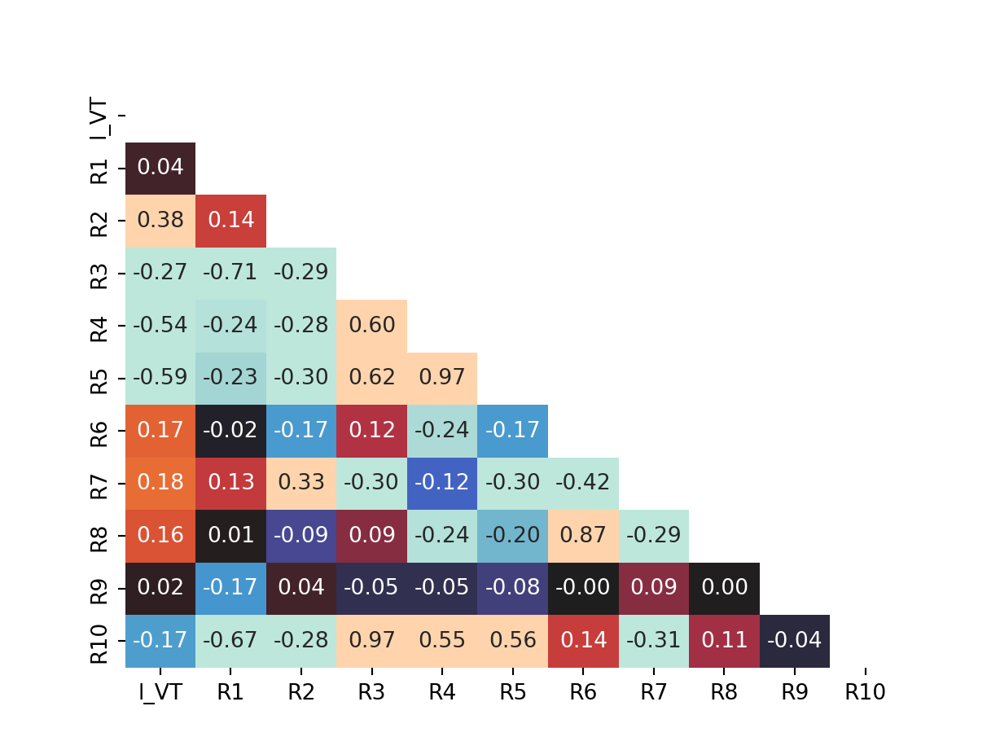
# Factores de inflación de la varianza (VIF)
from statsmodels.stats.outliers_influence import variance_inflation_factor
for i in range(1, lm_1.model.exog.shape[1]): print(variance_inflation_factor(lm_1.model.exog, i))2.2077109198999
3.18291599820826
1.512577893955147
30.24127699986962
82.05491709403677
97.96482402421886
4.84812107446913
5.37667914104877
4.231952446138941
1.1390486096554169
21.83164722834848# Corrección del problema de la multicolinealidad
# Método de componentes principales (PCA)
# Reescalamiento de la matriz de datos
from sklearn.preprocessing import scale
Xs = pd.DataFrame(scale(X))
Xs.head().round(2) 0 1 2 3 4 5 6 7 8 9 10
0 -0.48 0.59 -1.14 0.25 -0.06 -0.56 -1.25 3.21 -1.45 -0.63 0.13
1 -0.31 -1.17 0.14 0.55 0.08 0.17 -1.14 0.05 -1.33 -0.30 0.40
2 -0.08 -0.25 -1.45 0.07 -0.82 -0.42 3.44 -1.69 1.83 0.08 0.96
3 0.25 0.56 0.21 0.10 -0.27 -0.22 -0.19 0.19 0.10 -0.73 0.07
4 0.42 2.32 -0.45 -0.23 0.10 -0.07 -0.36 0.45 0.18 -0.29 -0.00# Método PCA de la librería sklearn
from sklearn.decomposition import PCA
pca = PCA()
pca.fit(Xs)PCA()In a Jupyter environment, please rerun this cell to show the HTML representation or trust the notebook.
On GitHub, the HTML representation is unable to render, please try loading this page with nbviewer.org.
PCA()
# Importancia de componentes
# Desviaciones estándar (SDs) de los componentes principales
(np.sqrt(pca.explained_variance_)).round(2)array([2.01, 1.54, 1.22, 1.01, 0.87, 0.79, 0.68, 0.47, 0.35, 0.15, 0.07])# Proporción de varianza explicada
((pca.explained_variance_ratio_)*100).round(2)array([36.29, 21.34, 13.3 , 9.13, 6.83, 5.64, 4.14, 2. , 1.09,
0.19, 0.05])# Proporción de varianza explicada acumulada
np.cumsum(np.round(pca.explained_variance_ratio_, decimals=4)*100)array([ 36.29, 57.63, 70.93, 80.06, 86.89, 92.53, 96.67, 98.67,
99.76, 99.95, 100. ])# Matriz de rotación de los factores
rotmat = pca.components_
rotmat.shape(11, 11)# Regresión con los cuatros primeros factores (explicatividad > 80%)
# Interpretación de los factores en base al peso de las variables explicativas
# NOTA: ¡ojo!, la dirección de los factores es diferente en Python y R
rotmat[:4,:].round(2)array([[-0.27, -0.29, -0.24, 0.45, 0.41, 0.43, 0. , -0.2 , -0.02,
-0.03, 0.43],
[ 0.2 , -0.11, -0.12, 0.12, -0.24, -0.19, 0.61, -0.32, 0.58,
0. , 0.15],
[-0.41, 0.54, -0.35, -0.26, 0.12, 0.2 , 0.13, -0.3 , 0.11,
-0.3 , -0.29],
[-0.27, -0.06, -0.27, -0.13, -0.01, -0.01, 0.04, -0.02, 0.03,
0.9 , -0.15]])# Factores estimados
pcscores = pca.fit_transform(scale(X))
pcscores.shape(80, 11)# Significado de la variables explicativas (factores)
pcscores[:10,:4] # 10 primeras filasarray([[-0.48476918, -2.49283728, -0.39472381, -0.3512601 ],
[ 0.93811472, -1.35991854, -0.97998487, -0.38150241],
[ 0.67552246, 4.29920846, 1.0625268 , 0.59921591],
[-0.42992425, -0.02737519, 0.14504884, -0.84046623],
[-0.8673304 , -0.40998562, 1.21063028, -0.36802165],
[ 0.36178714, 1.34224494, -0.1398588 , -0.84104517],
[ 0.22239636, -0.47982591, -0.64142878, -1.38659957],
[ 0.45846275, 1.60237168, -0.2593763 , -0.47149437],
[ 1.13591873, -2.08010949, 0.10255167, 0.08266445],
[-0.37084354, -1.34285341, -0.74458391, -0.10889674]])# Regresión con los factores estimados
Xfact = sm.add_constant(pcscores[:,:4])
lm_2 = sm.OLS(RENTAB_EMP.RENTAB, Xfact).fit()
print(lm_2.summary()) OLS Regression Results
==============================================================================
Dep. Variable: RENTAB R-squared: 0.546
Model: OLS Adj. R-squared: 0.522
Method: Least Squares F-statistic: 22.59
Date: Wed, 15 Nov 2023 Prob (F-statistic): 2.85e-12
Time: 09:52:37 Log-Likelihood: 78.398
No. Observations: 80 AIC: -146.8
Df Residuals: 75 BIC: -134.9
Df Model: 4
Covariance Type: nonrobust
==============================================================================
coef std err t P>|t| [0.025 0.975]
------------------------------------------------------------------------------
const 0.1450 0.010 13.827 0.000 0.124 0.166
x1 0.0170 0.005 3.232 0.002 0.007 0.027
x2 0.0044 0.007 0.648 0.519 -0.009 0.018
x3 -0.0691 0.009 -7.970 0.000 -0.086 -0.052
x4 -0.0418 0.010 -3.998 0.000 -0.063 -0.021
==============================================================================
Omnibus: 14.061 Durbin-Watson: 1.644
Prob(Omnibus): 0.001 Jarque-Bera (JB): 19.535
Skew: 0.751 Prob(JB): 5.73e-05
Kurtosis: 4.899 Cond. No. 2.00
==============================================================================
Notes:
[1] Standard Errors assume that the covariance matrix of the errors is correctly specified.# Método Ridge
from sklearn.linear_model import LinearRegression
from sklearn.linear_model import Ridge
from sklearn.model_selection import GridSearchCV
from sklearn.metrics import mean_squared_error
y = np.asarray(RENTAB_EMP.RENTAB) # y = RENTAB_EMP['RENTAB']
# Modelo baselina (sin regularización)
regression = LinearRegression()
regression.fit(X,y)LinearRegression()In a Jupyter environment, please rerun this cell to show the HTML representation or trust the notebook.
On GitHub, the HTML representation is unable to render, please try loading this page with nbviewer.org.
LinearRegression()
MSE_lm_3_0 = (mean_squared_error(y_true=y,y_pred=regression.predict(X)))
print(MSE_lm_3_0)0.004301953862928571coef_dict_regression = {}
for coef, feat in zip(regression.coef_, X.columns):
coef_dict_regression[feat] = coef
coef_dict_regression{'l_VT': 0.03038112251462276, 'R1': 0.048695294678163685, 'R2': 0.01309305040362247, 'R3': 0.44366808519367923, 'R4': -0.05617409325560271, 'R5': -0.012001985053930637, 'R6': -0.2658700929867994, 'R7': -0.018991219082772903, 'R8': -0.08292599521003328, 'R9': -0.01247702324614546, 'R10': 0.12626125534648275}# Regularización ridge
# ridge = Ridge(normalize=True)
ridge = Ridge()
search = GridSearchCV(estimator=ridge, param_grid={'alpha':np.logspace(-4,4,50)}, scoring='neg_mean_squared_error', n_jobs=1, refit=True, cv=10)
search.fit(X,y)GridSearchCV(cv=10, estimator=Ridge(), n_jobs=1,
param_grid={'alpha': array([1.00000000e-04, 1.45634848e-04, 2.12095089e-04, 3.08884360e-04,
4.49843267e-04, 6.55128557e-04, 9.54095476e-04, 1.38949549e-03,
2.02358965e-03, 2.94705170e-03, 4.29193426e-03, 6.25055193e-03,
9.10298178e-03, 1.32571137e-02, 1.93069773e-02, 2.81176870e-02,
4.09491506e-02, 5.96362332e-02, 8.68511...
3.72759372e+00, 5.42867544e+00, 7.90604321e+00, 1.15139540e+01,
1.67683294e+01, 2.44205309e+01, 3.55648031e+01, 5.17947468e+01,
7.54312006e+01, 1.09854114e+02, 1.59985872e+02, 2.32995181e+02,
3.39322177e+02, 4.94171336e+02, 7.19685673e+02, 1.04811313e+03,
1.52641797e+03, 2.22299648e+03, 3.23745754e+03, 4.71486636e+03,
6.86648845e+03, 1.00000000e+04])},
scoring='neg_mean_squared_error')In a Jupyter environment, please rerun this cell to show the HTML representation or trust the notebook. On GitHub, the HTML representation is unable to render, please try loading this page with nbviewer.org.
GridSearchCV(cv=10, estimator=Ridge(), n_jobs=1,
param_grid={'alpha': array([1.00000000e-04, 1.45634848e-04, 2.12095089e-04, 3.08884360e-04,
4.49843267e-04, 6.55128557e-04, 9.54095476e-04, 1.38949549e-03,
2.02358965e-03, 2.94705170e-03, 4.29193426e-03, 6.25055193e-03,
9.10298178e-03, 1.32571137e-02, 1.93069773e-02, 2.81176870e-02,
4.09491506e-02, 5.96362332e-02, 8.68511...
3.72759372e+00, 5.42867544e+00, 7.90604321e+00, 1.15139540e+01,
1.67683294e+01, 2.44205309e+01, 3.55648031e+01, 5.17947468e+01,
7.54312006e+01, 1.09854114e+02, 1.59985872e+02, 2.32995181e+02,
3.39322177e+02, 4.94171336e+02, 7.19685673e+02, 1.04811313e+03,
1.52641797e+03, 2.22299648e+03, 3.23745754e+03, 4.71486636e+03,
6.86648845e+03, 1.00000000e+04])},
scoring='neg_mean_squared_error')Ridge()
Ridge()
print(search.best_params_){'alpha': 1.2067926406393288}print(abs(search.best_score_))0.011260323137152676# ridge = Ridge(normalize=True, alpha=1.207)
ridge = Ridge(alpha=1.20679)
ridge.fit(X,y)Ridge(alpha=1.20679)In a Jupyter environment, please rerun this cell to show the HTML representation or trust the notebook.
On GitHub, the HTML representation is unable to render, please try loading this page with nbviewer.org.
Ridge(alpha=1.20679)
MSE_lm_3 = (mean_squared_error(y_true=y,y_pred=ridge.predict(X)))
print(MSE_lm_3)0.004956562993708741coef_dict_ridge = {}
for coef, feat in zip(ridge.coef_, X.columns):
coef_dict_ridge[feat] = coef
coef_dict_ridge{'l_VT': 0.025696965854039352, 'R1': -0.05055888236269989, 'R2': 0.015510840375677041, 'R3': 0.18429520974819244, 'R4': -0.04364232422236836, 'R5': -0.005030634957126601, 'R6': -0.11319102431052548, 'R7': 0.008823233166415131, 'R8': -0.10215993405656096, 'R9': -0.020001297300887597, 'R10': 0.20082345795451428}# Gráfica
n_alphas = 50
alphas = np.logspace(-4, 4, n_alphas)
coefs = []
for a in alphas:
# ridge = Ridge(alpha=a, fit_intercept=False, normalize=True)
ridge = Ridge(alpha=a, fit_intercept=False)
ridge.fit(X, y)
coefs.append(ridge.coef_)Ridge(alpha=10000.0, fit_intercept=False)In a Jupyter environment, please rerun this cell to show the HTML representation or trust the notebook.
On GitHub, the HTML representation is unable to render, please try loading this page with nbviewer.org.
Ridge(alpha=10000.0, fit_intercept=False)
ax = plt.gca()
ax.plot(alphas, coefs)
ax.set_xscale('log')
ax.set_xlim(ax.get_xlim()[::-1]) # reverse axis(25118.864315095823, 3.9810717055349695e-05)plt.xlabel('alpha')
plt.ylabel('weights')
plt.title('Coeficientes ridge en función del parámetros de regularización')
plt.axis('tight')(25118.864315095823, 3.9810717055349695e-05, -0.29356456116968355, 0.54463682355373)plt.show()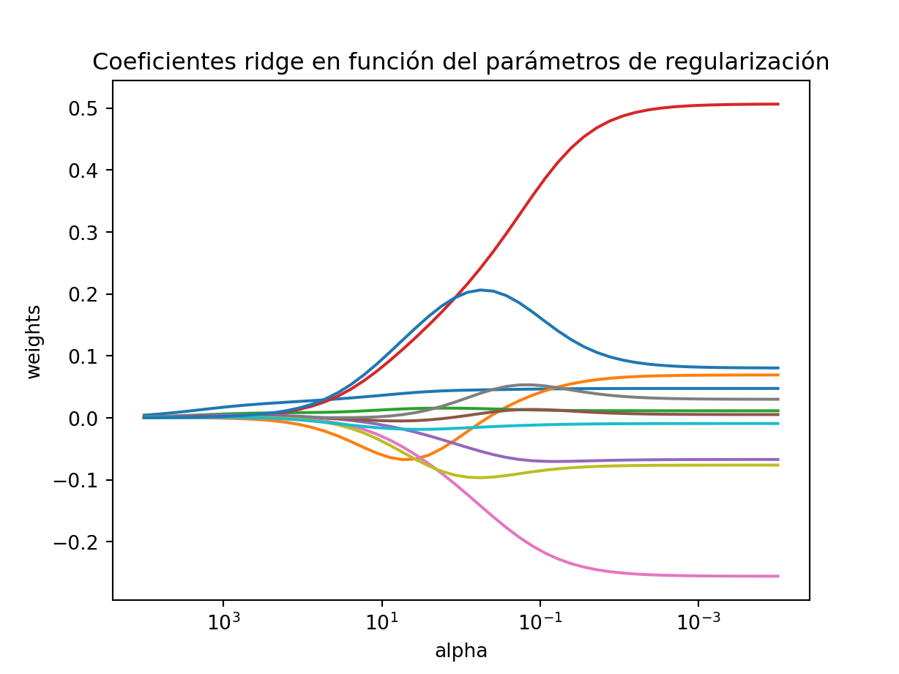
# Regresión LASSO
from sklearn.metrics import mean_squared_error
from sklearn.linear_model import LinearRegression
from sklearn.linear_model import LassoCV
from sklearn.linear_model import Lasso
from sklearn.model_selection import KFold
from sklearn.model_selection import GridSearchCV
lasso = Lasso()
search = GridSearchCV(estimator=lasso, param_grid={'alpha':np.logspace(-4,4,50)}, scoring='neg_mean_squared_error', n_jobs=1, refit=True, cv=10)
search.fit(X,y)GridSearchCV(cv=10, estimator=Lasso(), n_jobs=1,
param_grid={'alpha': array([1.00000000e-04, 1.45634848e-04, 2.12095089e-04, 3.08884360e-04,
4.49843267e-04, 6.55128557e-04, 9.54095476e-04, 1.38949549e-03,
2.02358965e-03, 2.94705170e-03, 4.29193426e-03, 6.25055193e-03,
9.10298178e-03, 1.32571137e-02, 1.93069773e-02, 2.81176870e-02,
4.09491506e-02, 5.96362332e-02, 8.68511...
3.72759372e+00, 5.42867544e+00, 7.90604321e+00, 1.15139540e+01,
1.67683294e+01, 2.44205309e+01, 3.55648031e+01, 5.17947468e+01,
7.54312006e+01, 1.09854114e+02, 1.59985872e+02, 2.32995181e+02,
3.39322177e+02, 4.94171336e+02, 7.19685673e+02, 1.04811313e+03,
1.52641797e+03, 2.22299648e+03, 3.23745754e+03, 4.71486636e+03,
6.86648845e+03, 1.00000000e+04])},
scoring='neg_mean_squared_error')In a Jupyter environment, please rerun this cell to show the HTML representation or trust the notebook. On GitHub, the HTML representation is unable to render, please try loading this page with nbviewer.org.
GridSearchCV(cv=10, estimator=Lasso(), n_jobs=1,
param_grid={'alpha': array([1.00000000e-04, 1.45634848e-04, 2.12095089e-04, 3.08884360e-04,
4.49843267e-04, 6.55128557e-04, 9.54095476e-04, 1.38949549e-03,
2.02358965e-03, 2.94705170e-03, 4.29193426e-03, 6.25055193e-03,
9.10298178e-03, 1.32571137e-02, 1.93069773e-02, 2.81176870e-02,
4.09491506e-02, 5.96362332e-02, 8.68511...
3.72759372e+00, 5.42867544e+00, 7.90604321e+00, 1.15139540e+01,
1.67683294e+01, 2.44205309e+01, 3.55648031e+01, 5.17947468e+01,
7.54312006e+01, 1.09854114e+02, 1.59985872e+02, 2.32995181e+02,
3.39322177e+02, 4.94171336e+02, 7.19685673e+02, 1.04811313e+03,
1.52641797e+03, 2.22299648e+03, 3.23745754e+03, 4.71486636e+03,
6.86648845e+03, 1.00000000e+04])},
scoring='neg_mean_squared_error')Lasso()
Lasso()
print(search.best_params_){'alpha': 0.0009540954763499944}print(abs(search.best_score_))0.010415430553402948lasso = Lasso(alpha=0.00095)
lasso.fit(X,y)Lasso(alpha=0.00095)In a Jupyter environment, please rerun this cell to show the HTML representation or trust the notebook.
On GitHub, the HTML representation is unable to render, please try loading this page with nbviewer.org.
Lasso(alpha=0.00095)
MSE_lm_4 = (mean_squared_error(y_true=y,y_pred=lasso.predict(X)))
print(MSE_lm_4)0.004447386776636628coef_dict_lasso = {}
for coef, feat in zip(lasso.coef_, X.columns):
coef_dict_lasso[feat] = coef
coef_dict_lasso{'l_VT': 0.02647848311704356, 'R1': -0.0, 'R2': 0.01393756455463257, 'R3': 0.30020893054761955, 'R4': -0.054232171831217375, 'R5': -0.0050485376396390445, 'R6': -0.1937096099995072, 'R7': 0.0, 'R8': -0.08910648062930449, 'R9': -0.014437757323950948, 'R10': 0.1838342275547619}# Gráfica
lasso = Lasso(random_state=0, max_iter=10000, tol=0.01)
alphas = np.logspace(-4, 4, 50)
tuned_parameters = [{'alpha': alphas}]
n_folds = 3
clf = GridSearchCV(lasso, tuned_parameters, cv=n_folds, refit=False)
clf.fit(X, y)GridSearchCV(cv=3, estimator=Lasso(max_iter=10000, random_state=0, tol=0.01),
param_grid=[{'alpha': array([1.00000000e-04, 1.45634848e-04, 2.12095089e-04, 3.08884360e-04,
4.49843267e-04, 6.55128557e-04, 9.54095476e-04, 1.38949549e-03,
2.02358965e-03, 2.94705170e-03, 4.29193426e-03, 6.25055193e-03,
9.10298178e-03, 1.32571137e-02, 1.93069773e-02, 2.81176870e-02,
4.094915...
8.28642773e-01, 1.20679264e+00, 1.75751062e+00, 2.55954792e+00,
3.72759372e+00, 5.42867544e+00, 7.90604321e+00, 1.15139540e+01,
1.67683294e+01, 2.44205309e+01, 3.55648031e+01, 5.17947468e+01,
7.54312006e+01, 1.09854114e+02, 1.59985872e+02, 2.32995181e+02,
3.39322177e+02, 4.94171336e+02, 7.19685673e+02, 1.04811313e+03,
1.52641797e+03, 2.22299648e+03, 3.23745754e+03, 4.71486636e+03,
6.86648845e+03, 1.00000000e+04])}],
refit=False)In a Jupyter environment, please rerun this cell to show the HTML representation or trust the notebook. On GitHub, the HTML representation is unable to render, please try loading this page with nbviewer.org.
GridSearchCV(cv=3, estimator=Lasso(max_iter=10000, random_state=0, tol=0.01),
param_grid=[{'alpha': array([1.00000000e-04, 1.45634848e-04, 2.12095089e-04, 3.08884360e-04,
4.49843267e-04, 6.55128557e-04, 9.54095476e-04, 1.38949549e-03,
2.02358965e-03, 2.94705170e-03, 4.29193426e-03, 6.25055193e-03,
9.10298178e-03, 1.32571137e-02, 1.93069773e-02, 2.81176870e-02,
4.094915...
8.28642773e-01, 1.20679264e+00, 1.75751062e+00, 2.55954792e+00,
3.72759372e+00, 5.42867544e+00, 7.90604321e+00, 1.15139540e+01,
1.67683294e+01, 2.44205309e+01, 3.55648031e+01, 5.17947468e+01,
7.54312006e+01, 1.09854114e+02, 1.59985872e+02, 2.32995181e+02,
3.39322177e+02, 4.94171336e+02, 7.19685673e+02, 1.04811313e+03,
1.52641797e+03, 2.22299648e+03, 3.23745754e+03, 4.71486636e+03,
6.86648845e+03, 1.00000000e+04])}],
refit=False)Lasso(max_iter=10000, random_state=0, tol=0.01)
Lasso(max_iter=10000, random_state=0, tol=0.01)
scores = clf.cv_results_['mean_test_score']
scores_std = clf.cv_results_['std_test_score']
plt.semilogx(alphas, scores)
# gráfica que muestra los errores (+/- una desviación estándar de las puntuaciones)
std_error = scores_std / np.sqrt(n_folds)
plt.semilogx(alphas, scores + std_error, 'b--')
plt.semilogx(alphas, scores - std_error, 'b--')
# alpha=0.2 controla la translucidez del color de relleno
plt.fill_between(alphas, scores + std_error, scores - std_error, alpha=0.2)
plt.ylabel('CV score +/- std error')
plt.xlabel('alpha')
plt.axhline(np.max(scores), linestyle='--', color='.5')
plt.xlim([alphas[0], alphas[-1]])(0.0001, 10000.0)plt.show()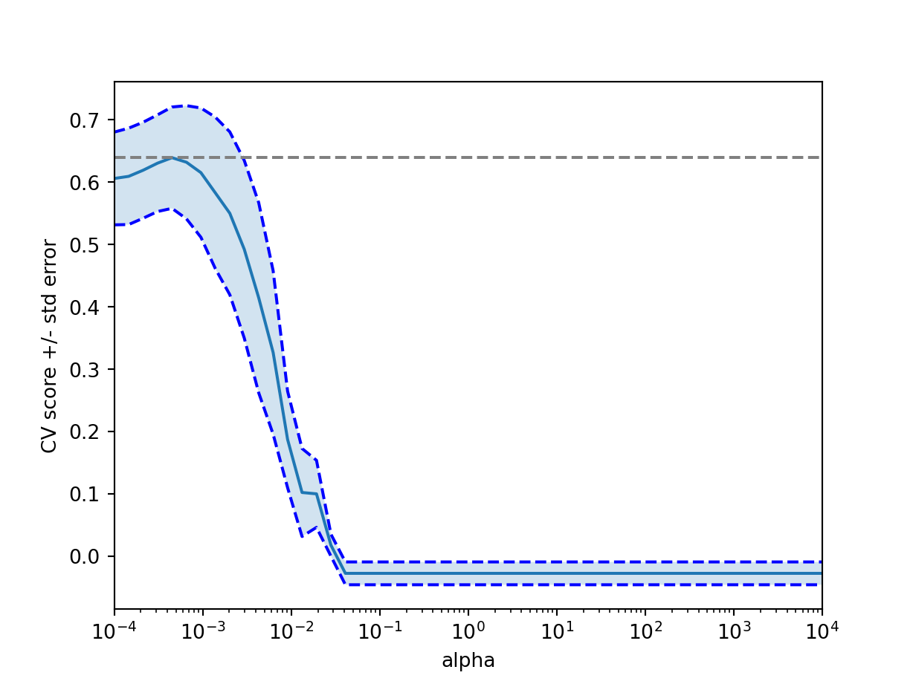